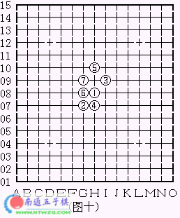

常见六种五子棋阵法
#1 常见六种五子棋阵法 作者：有志青年 发表时间：2006-2-7 14:45:59
大家都知道五子棋发源于中国，只是在古代并没有关于五子棋的系统研究，现在许多人都在研究学习由日本人研究出来的五子定式(包括我自已在内)。但是，在中国民间流传着许多五子棋阵法，现向大家介绍六种。
一、斜三阵：
多由浦月、流星、丘月、游星、慧星演变而来。见图一。由本阵还可演变成一字长蛇阵，见图二。以及长勾阵，见图三。斜三阵的进攻多以成角或成半燕翼发起。
二.四角阵：
黑方四子呈四方形的摆布，因而得名。此阵多由明星、恒星、流星、金星、瑞星等开局演变而来。见图四。四角阵的特点是容易形成2、3支“剑”(棋语有云：三剑在手无不胜)，局势利于向纵深发展。攻防的要点是夺先与反夺先，较少出现做棋的机会。在图五中，黑方的四角阵与白方的四角阵互相交错，称为双四角阵，是夺先与反夺先的典型。
三.梅花阵：
图六所示阵形因黑方四子如梅花状而被称之为梅花阵。梅花阵多由浦月、斜月、寒星、花月、丘月演变而来。在传统阵法中属攻强守弱的类型。在进攻时，多以斜直相辅、连跳结合来组织攻势。变化极多。但是要注意，有些梅花阵却是持黑必败的，如图十所示。
四.剑阵：
见图七，黑白双方所下子成剑状，故得此名。剑阵好象是花月的专利，偶见于丘月、浦月。黑方第9手多选G10或J7，也有选H10、J8、G9、I7等点，战斗基本上是在剑柄处展开。
五.燕阵：
图八是典型的燕阵，白2为燕头、白8、6为双翅、黑9、7为尾翼，形态象展翅飞翔的燕子。燕阵也是变化极多的一种阵法，但大多是黑胜。有多种开局可演变出燕阵(有些可能要在十手之后才成形)，多见于恒星、明星、流星。
六.八卦阵：
图九是从峡月中演变而成的最标准的八卦阵。黑方各子之间均呈日形连接，形似象棋中的马步。在八卦阵中，任意一条线都有黑子在防守，白无力进攻。在攻守转换时，黑方极易走出一子通三路、二路的好手，当其时，白方攻无从攻，守无从守，除败无他。此阵为中国民间传统阵法中“以守待攻”战术的代表杰作。

七.补充说明：
在民间流传的阵法中，多以黑方棋形命名，因此各种阵法的白方棋子位置会有局部区别。因此，民间棋阵的变化是以黑方为主。
上述六阵均变化多端，胜负不可一言而定，其中，斜三、剑阵、燕阵的变化有数百种之多。燕阵、长勾、长蛇、梅花均为攻击力很强的阵法。八卦则是最佳防守阵。
民间的五子棋阵法，形形色色，多种多样，我所知的也是从书上看来的，非常有限。那位棋友若有所知，请勿藏珍。
本文所用棋图是从婠小姐的“瑞星心得”一文中COPY过来的，未经作者同意，有盗版之嫌，在此道谢了。
#2 Re:常见六种五子棋阵法 作者：ntren 发表时间：2006-2-7 23:57:48
哈哈，八卦阵我常用呀，以前自己瞎下下的时候偶然发现的，效果很好的。呵呵/#3 Re:Re:常见六种五子棋阵法 作者：Jean 发表时间：2006-2-27 10:26:00
恩，相当常见．#4 Re:常见六种五子棋阵法 作者：无忌 发表时间：2006-3-3 11:16:25
OK不错，对#5 Re:常见六种五子棋阵法 作者：雁儿 发表时间：2006-3-7 20:19:29
好。。。。。。。。。。。#6 Re:常见六种五子棋阵法 作者：微风 发表时间：2006-3-16 20:38:18
很好啊
#7 Re:常见六种五子棋阵法 作者：春风 发表时间：2006-3-16 22:17:36
#8 Re:常见六种五子棋阵法 作者：yidefei 发表时间：2006-3-28 9:02:06
还行吧,很好的防守呀.那个八卦.#9 Re:常见六种五子棋阵法 作者：游建 发表时间：2006-4-10 14:37:05
好好学学#10 Re:常见六种五子棋阵法 作者：游建 发表时间：2006-4-10 14:37:53
好像没什么机会用八卦阵
#11 Re:常见六种五子棋阵法 作者：＃飞行器＃ 发表时间：2006-5-6 6:44:40
多谢指教．
#12 Re:常见六种五子棋阵法 作者：沉默火焰 发表时间：2006-5-9 15:49:21
很好用，我现学现用了，不过还没搞清变化。#13 Re:常见六种五子棋阵法 作者：董虎 发表时间：2006-8-16 18:28:10
很好啊，不过我下棋很随便啊，不大能用上啊#14 Re:常见六种五子棋阵法 作者：laomao 发表时间：2006-8-19 12:48:57
八卦似乎很很容易被看出来 前几手就被占位 显示的威力也不大#15 Re:常见六种五子棋阵法 作者：日出333 发表时间：2006-9-2 21:14:13
有意思。再想想应该还有其他阵法吧？#16 Re:常见六种五子棋阵法 作者：ベ☆ve寶々 发表时间：2006-9-3 6:18:04
哦..呵呵 不错啊!
要好好学学~~
#17 Re:常见六种五子棋阵法 作者：啊丫呀 发表时间：2006-9-5 18:47:42
哦..呵呵 不错啊!
要好好学学！
#18 Re:常见六种五子棋阵法 作者：检查用户名 发表时间：2006-9-8 8:19:11
八卦我了常用，谢谢讲解：）#19 Re:常见六种五子棋阵法 作者：mwse 发表时间：2006-9-8 14:25:22
谢谢! 提供 我又学习了
!
#20 Re:常见六种五子棋阵法 作者：ベ☆ve寶々 发表时间：2006-9-9 6:31:52
学学..#21 Re:常见六种五子棋阵法 作者：ms2_pd 发表时间：2006-9-12 10:36:31
阵法只在于临阵之际的一些思路启发，不一定每次都用上。而且，不一定一局棋必要用一种阵法。#22 Re:常见六种五子棋阵法 作者：浩楠 发表时间：2006-9-12 11:38:59
和高手对阵的话,不出5步,八卦就不能用拉(虽然我常用)#23 Re:常见六种五子棋阵法 作者：李志远 发表时间：2006-9-25 16:22:25
俺看不懂#24 Re:常见六种五子棋阵法 作者：九命猫 发表时间：2006-9-26 10:02:06
这些阵型很常见只是以前不知道还有这么个好听的名字#25 Re:常见六种五子棋阵法 作者：sffgw 发表时间：2006-9-27 11:10:15
又长见识了
#26 Re:常见六种五子棋阵法 作者：董虎 发表时间：2006-10-7 5:20:20
咳我一般都是随心所欲很自由的 啊,不用什么阵法啊#27 Re:Re:常见六种五子棋阵法 作者：破网的蜘蛛 发表时间：2006-10-16 15:29:03
八卦是无为的下法，不可取#28 Re:常见六种五子棋阵法 作者：天上掉个馅饼 发表时间：2006-10-27 19:32:49
不错，学习////#29 Re:常见六种五子棋阵法 作者：静0902 发表时间：2006-10-29 20:38:21
不知从何学起，请哪位高手指点指点呀
QQ：48359557
#30 Re:常见六种五子棋阵法 作者：风行奇迹 发表时间：2006-11-1 19:52:04
又长见识了！
#31 Re:常见六种五子棋阵法 作者：hhebb 发表时间：2006-11-4 23:18:43
八卦阵挺有意思的#32 Re:常见六种五子棋阵法 作者：五子散人 发表时间：2006-11-5 7:22:42
学习体会中，谢谢。#33 Re:常见六种五子棋阵法 作者：zhc120 发表时间：2006-11-5 8:15:36
这几种阵法具体的实战应用有没有详解！#34 Re:常见六种五子棋阵法 作者：菜鸟飞飞 发表时间：2006-11-6 21:01:43
看了以后，感觉很受启发，不过有很多变化不知道
而且只打数字没有黑白颜色，看起来太累~~嘿嘿
#35 Re:常见六种五子棋阵法 作者：shzzhy 发表时间：2006-11-24 23:00:52
正想学习燕阵呢
#36 Re:常见六种五子棋阵法 作者：cason 发表时间：2007-6-21 9:55:37
真沒想到我經常用的陣法就是叫做斜三角，八卦陣和燕陣。
學到東西了。謝謝版主。
#37 Re:常见六种五子棋阵法 作者：阿云 发表时间：2007-6-25 19:14:53
都是经常看见的开局,喜欢!#38 Re:常见六种五子棋阵法 作者：百合香舍 发表时间：2007-7-12 20:13:19
有志青年,我是一个确实的菜鸟.弱弱地问一句:那个图1图2图3的下法,在专业规则里不是犯了活三,四四,长连的禁手了么?或者这只是民间无禁手的下法?
#39 Re:常见六种五子棋阵法 作者：limmss 发表时间：2007-7-13 12:41:28
剑阵 无意中下出的 不错#40 Re:常见六种五子棋阵法 作者：古道东疯 发表时间：2007-8-21 20:35:15
国粹,#41 Re:常见六种五子棋阵法 作者：sjdang 发表时间：2007-9-21 10:10:56
不错，总结经验还是有帮助的！！
#42 Re:常见六种五子棋阵法 作者：零点 发表时间：2007-11-5 18:24:30
要好好地学学呢#43 Re:常见六种五子棋阵法 作者：洋洋得亿 发表时间：2007-11-6 20:27:24
八卦易学
#44 Re:常见六种五子棋阵法 作者：来客沙丝 发表时间：2009-3-23 18:13:19
长见识了。